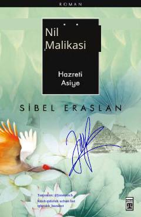

NMOsiyo onamizning hayoti va iymon yo'lidagi matonati haqidagi tarixiy-badiiy roman.
Ushbu asar Fir'avn saroyida yashagan va Muso alayhissalomni asrab olgan Osiyo onamizning hayotiga bag'ishlangan tarixiy-badiiy romandir. Muallif Sibel Eraslan qalamiga mansub mazkur kitobda Osiyo onamizning iymoni, sabri va matonati yuksak mahorat bilan tasvirlangan.